Nguyên tắc của phần mềm
Phần mềm được xây để bạn giữ được tài khoản. Nó tạo nhiều creative khác nhau từ cùng một bộ nguồn để chạy quảng cáo (Meta Ads Manager và TikTok Ads chấp nhận hàng trăm creative để test). Nó không nhân bản gần giống một video, không có kỹ thuật né bộ lọc trùng lặp (lật hình, đổi tốc độ, thêm nhiễu, xoá watermark), không đăng tự động và không quản lý nhiều tài khoản. Những thứ đó bị Meta xếp vào "unoriginal content" (từ 7/2025) và TikTok xếp vào "unoriginal / spam", hậu quả là giảm phân phối hoặc khoá cả cụm tài khoản.
Ba cổng bắt buộc trước khi một video được xuất: claim gate (chỉ nói điều có bằng chứng), cổng chính sách quảng cáo (không nói câu chắc chắn bị từ chối), điểm nguyên bản (không giống bản khác trong cùng chiến dịch). Cổng nào "fail" thì không duyệt được, không render final, không vào gói xuất.
Cài đặt
Yêu cầu chung
- Python 3.11+, Node 18+, FFmpeg/ffprobe trong PATH.
- Tuỳ chọn nhưng nên có: Ollama với model
qwen3:8b(viết kịch bản và hook), whisper-cli (tách lời thoại), tesseract (đọc chữ trên hình). - Một giọng đọc tiếng Việt của hệ điều hành: macOS có sẵn giọng Linh; Windows cài ở Settings → Time & Language → Speech → Add voices → Tiếng Việt.
macOS
./scripts/dev.sh # API 127.0.0.1:8765 + worker + giao diện dev http://127.0.0.1:5190
./scripts/start.sh # build giao diện rồi chạy tất cả tại http://127.0.0.1:8765
# Ứng dụng desktop: apps/desktop/src-tauri/target/release/bundle/macos/AI Video Factory.appWindows (PowerShell)
winget install Gyan.FFmpeg # hoặc tải ffmpeg và thêm vào PATH
winget install Ollama.Ollama ; ollama pull qwen3:8b
.\scripts\dev.ps1 # chạy API + worker + giao diện dev
.\scripts\start.ps1 # build giao diện rồi chạy tại http://127.0.0.1:8765
# Đóng gói desktop: cd apps\desktop ; npm run build ; npx tauri build --bundles nsisTrạng thái Windows: mã nguồn đã được rà soát và sửa cho Windows (đường dẫn, tên thư mục không chứa ký tự cấm, giọng SAPI, font, script PowerShell, vị trí file cấu hình của app desktop), nhưng mình chỉ có máy Mac nên chưa chạy thử trên Windows thật. Khi chạy lần đầu, hãy mở màn Hệ thống → Cài đặt → Thành phần & phụ thuộc để xem FFmpeg, Ollama, whisper, tesseract và giọng đọc đã được nhận diện chưa.
Dữ liệu nằm trong thư mục data/ của dự án (CSDL SQLite, media, cache, model) và video xuất trong data/output/. Đổi vị trí bằng biến môi trường AVF_DATA_DIR và AVF_OUTPUT_DIR. Nếu bạn di chuyển cả thư mục dự án, phần mềm tự sửa đường dẫn trong CSDL ở lần khởi động kế tiếp.
Quy trình 15 bước
Thanh bên trái của ứng dụng đi theo đúng thứ tự này. Mỗi bước dưới đây có ảnh màn hình thật từ dự án thử nghiệm "Test thực tế 13:34" (4 video nguồn, 25 cảnh).
Tạo dự án
Một dự án = một sản phẩm + một chiến dịch. Nhập tên dự án, tên sản phẩm và số video mục tiêu. Thẻ dự án hiển thị tiến độ sản xuất và trạng thái duyệt. Xoá dự án yêu cầu gõ lại tên để tránh nhầm.
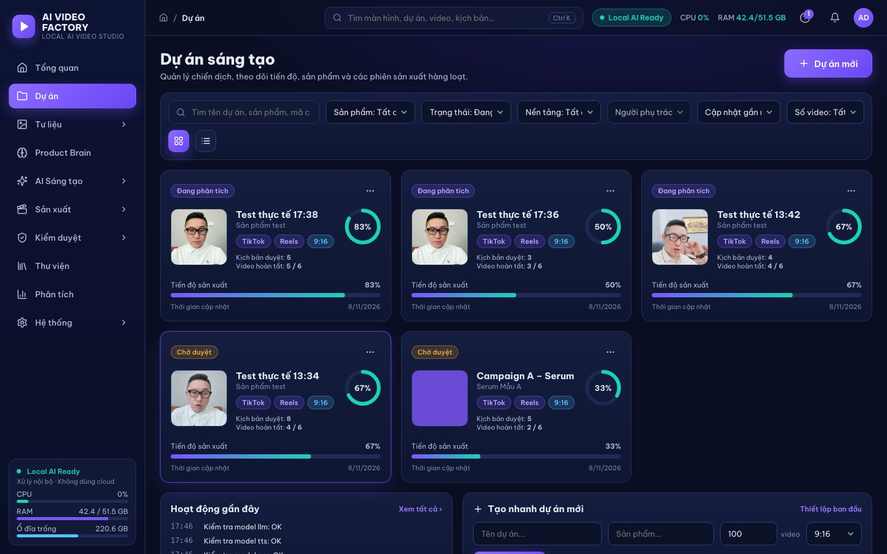
Nhập video nguồn
Kéo thả file hoặc chọn Từ thư mục để nhập cả thư mục mà không copy file. Phần mềm đọc thông số bằng ffprobe (độ phân giải, fps, codec, xoay màn hình), tính SHA-256 để chặn file trùng và tạo proxy để xem trước mượt. Bật/tắt các bước phân tích ở cột phải: tách cảnh, tách lời thoại, OCR, chất lượng hình.
Quan trọng cho quy mô lớn: càng nhiều video nguồn khác góc máy, bối cảnh thì các creative càng khác nhau. Phần mềm yêu cầu tối thiểu 3 video và 12 cảnh khi sinh trên 20 bản, 5 video và 25 cảnh khi trên 100 bản, 8 video và 40 cảnh khi trên 300 bản.
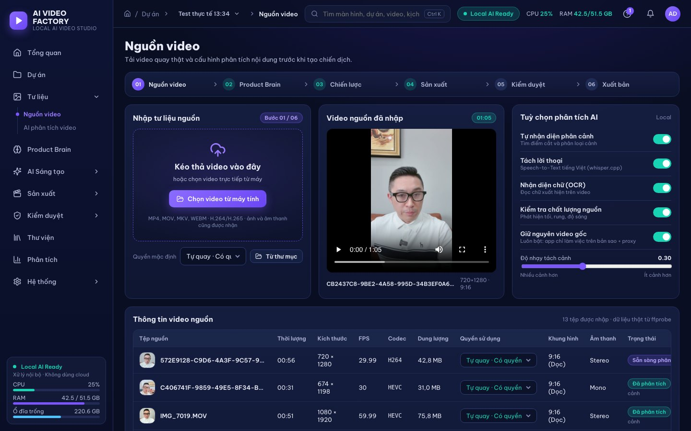
Phân tích video
Mỗi video được tách cảnh, lấy keyframe, chấm điểm sáng/rung, đọc chữ trên hình và tách lời thoại bằng whisper.cpp (tiếng Việt). Nhãn cảnh (packshot, thao tác tay, khuôn mặt…) chỉ là gợi ý với độ tin cậy thấp: bạn phải bấm duyệt từng cảnh hoặc chọn nhiều cảnh rồi "Đưa vào thư viện cảnh". Bấm vào một dòng transcript để nhảy video tới đúng giây đó. Cảnh đã duyệt được giữ nguyên khi bạn phân tích lại.
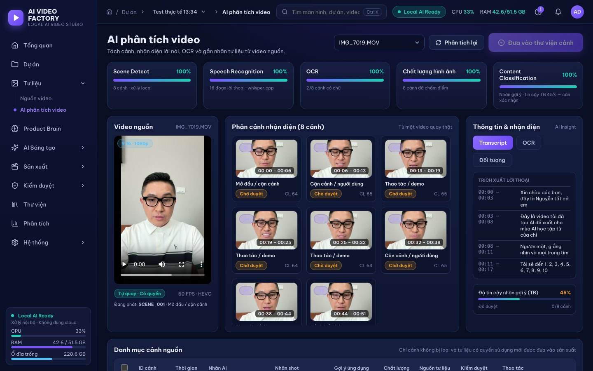
Product Brain: claim và bằng chứng
Đây là nguồn sự thật duy nhất của AI. Nhập USP, cách dùng, giới hạn, CTA được phép, cụm từ cấm. Mỗi claim (lợi ích/công dụng) phải gắn một bằng chứng (tài liệu, chứng nhận) mới được duyệt; kịch bản chỉ được nói những claim đã duyệt và phải trích đúng ý. Thêm FAQ để AI có nhiều chất liệu hơn. Nên có ít nhất 5 claim khi làm lô trên 50 bản, nếu không kịch bản sẽ lặp ý.
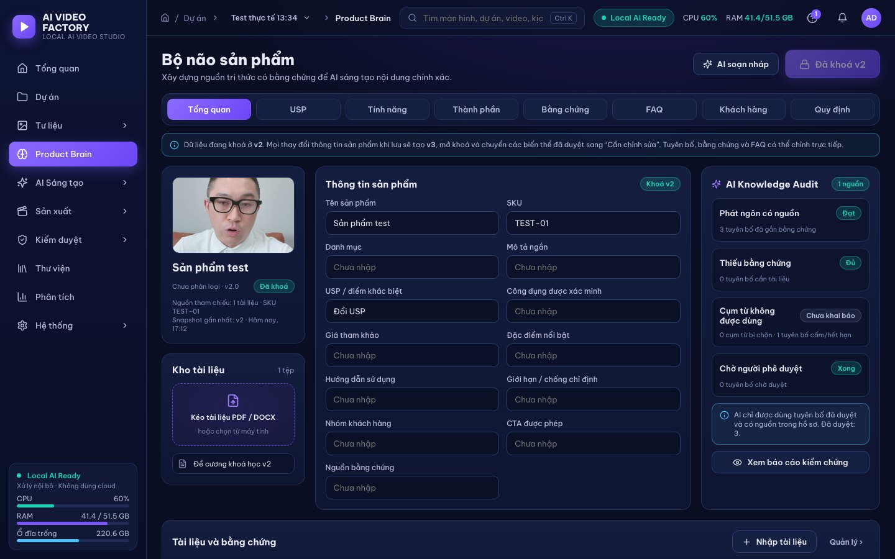
Chiến lược, thư viện hook và kế hoạch
Chọn nhóm khách hàng, mạch kể, thời lượng, bố cục (toàn màn, chia đôi, hình-trong-hình, panel chữ), nền tảng đích (Facebook/Instagram, TikTok), ngành hàng (để áp đúng bộ quy tắc chính sách) và landing URL (để gói xuất gắn UTM). Góc nội dung được xếp theo tư liệu bạn có; góc thiếu cảnh sẽ báo "cần quay thêm".
- Thư viện hook: bấm Sinh hook (LLM) để AI viết câu mở đầu. Hook mới phải khác mọi hook đã có, qua claim gate và cổng chính sách; mỗi hook dùng tối đa cho 5 bản. Bạn cũng có thể gõ hook tay; hook vi phạm (ví dụ nhắc tới ngoại hình người xem) bị từ chối ngay.
- Kế hoạch & ước tính: nhập số bản mục tiêu (tới 1000) để xem bạn còn thiếu gì (video nguồn, hook, claim), bao nhiêu tổ hợp khả thi, mất bao nhiêu giờ LLM và render (đo từ các job đã chạy trên máy bạn), tốn bao nhiêu GB. Bấm Sinh N biến thể khi không còn cảnh báo đỏ.
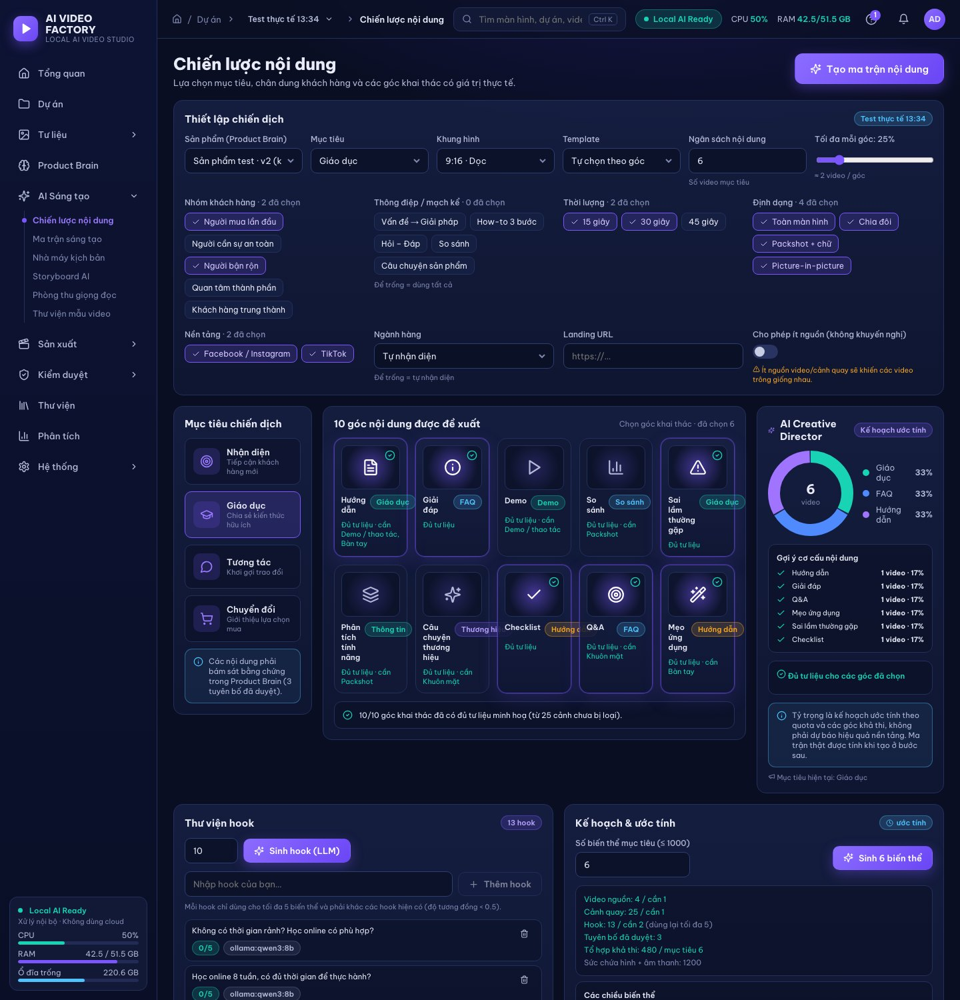
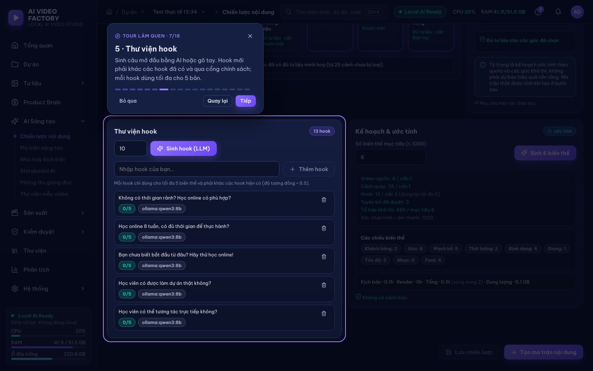
Ma trận sáng tạo
Mỗi dòng là một biến thể: khán giả × góc × kết cấu × thời lượng × bố cục, kèm biến số được gán tự động (tốc độ giọng, font, nhạc nếu có). Cột Lô cho biết bản thuộc lô nào; cột Độc đáo là điểm nguyên bản sau QC (đỏ = dưới ngưỡng). Nút Tạo ma trận mới mở hộp thoại: nhập số bản và chọn "Thêm thành lô mới" nếu muốn giữ các bản đang có. Nút Tạo kịch bản đưa toàn bộ bản nháp vào hàng đợi LLM.
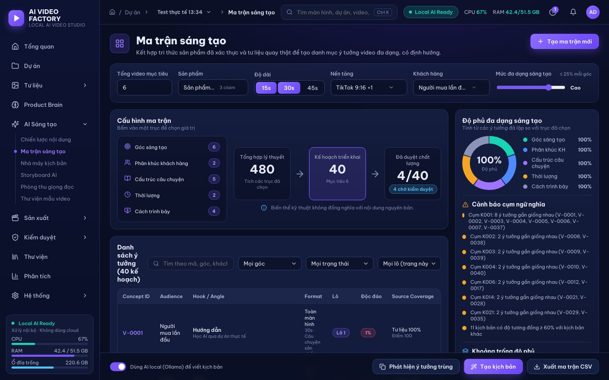
Kịch bản
LLM viết kịch bản theo beat (hook, thân, CTA) với hook lấy từ thư viện. Cờ đỏ là lỗi nghiêm trọng: claim chưa duyệt, câu không khớp claim trích dẫn, cụm từ cấm, hoặc vi phạm chính sách quảng cáo (cam kết kết quả, trước/sau, công dụng y khoa…). Kịch bản có cờ đỏ không duyệt được; sửa trực tiếp trong trình soạn rồi bấm Duyệt kịch bản. Nếu LLM không có, phần mềm dùng engine mẫu chỉ ghép dữ liệu đã duyệt.
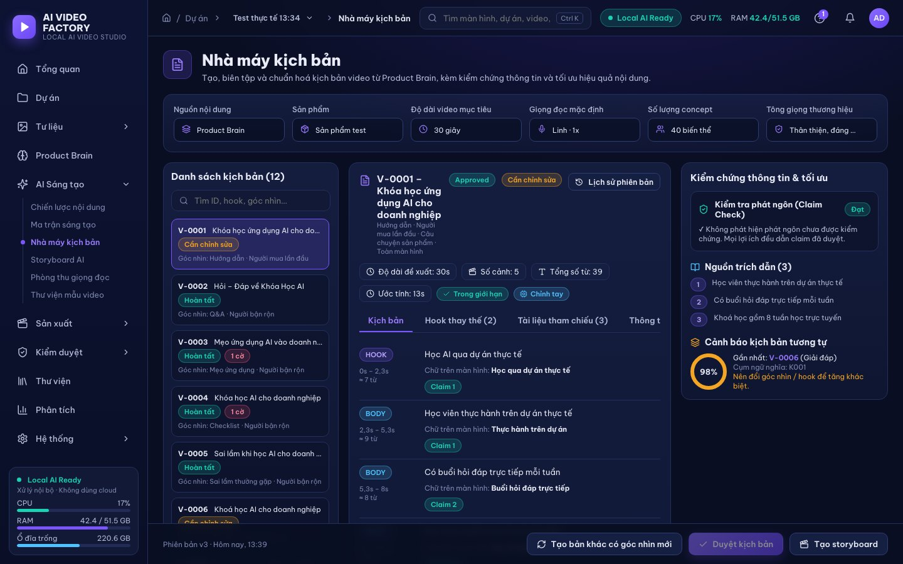
Storyboard
Mỗi beat được gán một cảnh từ thư viện theo nhãn và điểm chất lượng, ưu tiên cảnh chưa được bản khác dùng để các video không trùng hình. Bố cục chia đôi và hình-trong-hình lấy thêm một cảnh khác làm cảnh phụ. Bạn đổi cảnh, hiệu ứng chuyển động và thời lượng trong panel phải. Có thể dựng lại storyboard sau khi QC báo trùng.
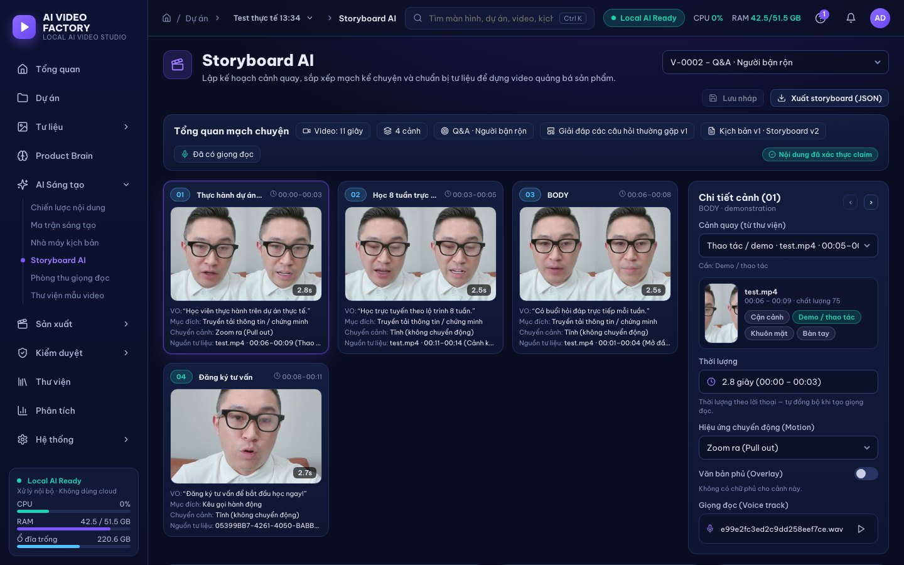
Giọng đọc
Giọng đọc tiếng Việt của hệ điều hành, chuẩn hoá âm lượng về −16 LUFS, có từ điển phát âm cho số và đơn vị. Mỗi biến thể được gán một tốc độ (0,92 / 1,0 / 1,08) để không bản nào nghe y hệt nhau. Bấm Nghe thử để kiểm tra trước. Voice clone mặc định tắt theo đặc tả.
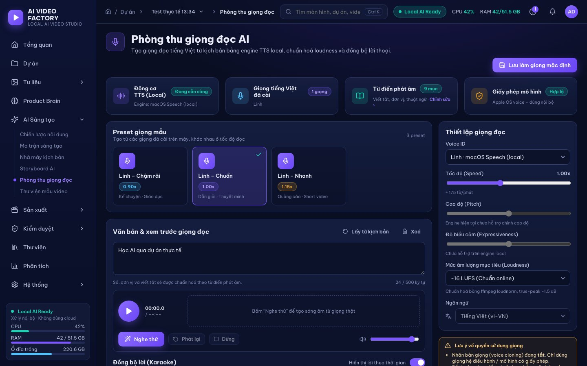
Editor và xem trước
Xem timeline, cắt, tách, đổi cảnh, sửa phụ đề, chọn hiệu ứng chuyển động rồi Render Preview. Bản preview có watermark DRAFT và độ phân giải một nửa để render nhanh. Preview xong thì QC tự chạy.
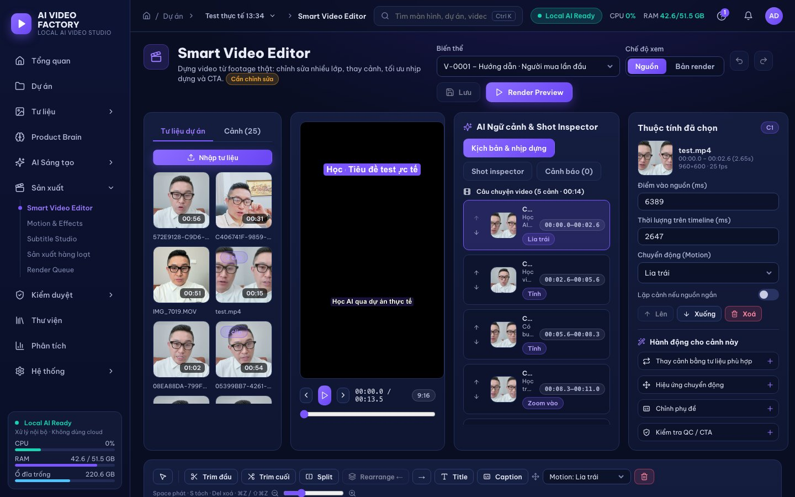
Sản xuất hàng loạt
Chọn chiến dịch, thời lượng, giọng, template, brand kit và chất lượng xuất rồi tạo lô render. Chỉ biến thể đã duyệt QC mới vào lô final; biến thể có điểm nguyên bản dưới ngưỡng bị loại và được liệt kê để bạn sửa. GPU (VideoToolbox trên Mac, NVENC/QSV/AMF trên Windows) được dùng khi có, tự chuyển sang CPU nếu lỗi.
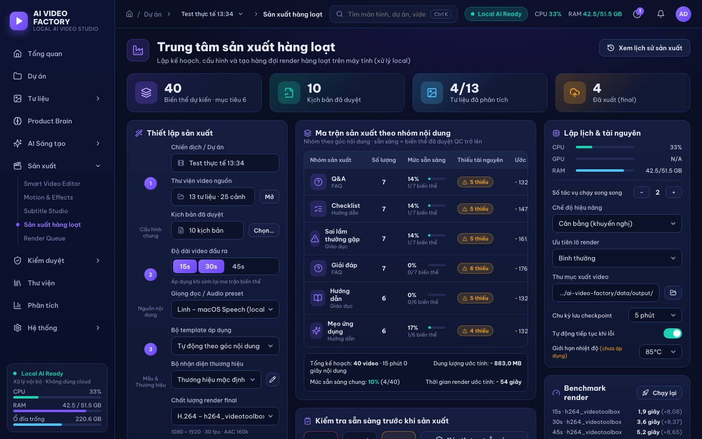
Hàng đợi render
Hàng đợi bền vững trong SQLite: tắt máy giữa chừng thì mở lại chạy tiếp, job treo được tự phát hiện và thử lại. Tạm dừng, tiếp tục, thử lại, huỷ theo từng job hoặc theo cả lô (thẻ "Lô render" ở cuối trang). Chế độ Eco / Balanced / Turbo điều chỉnh số job song song.
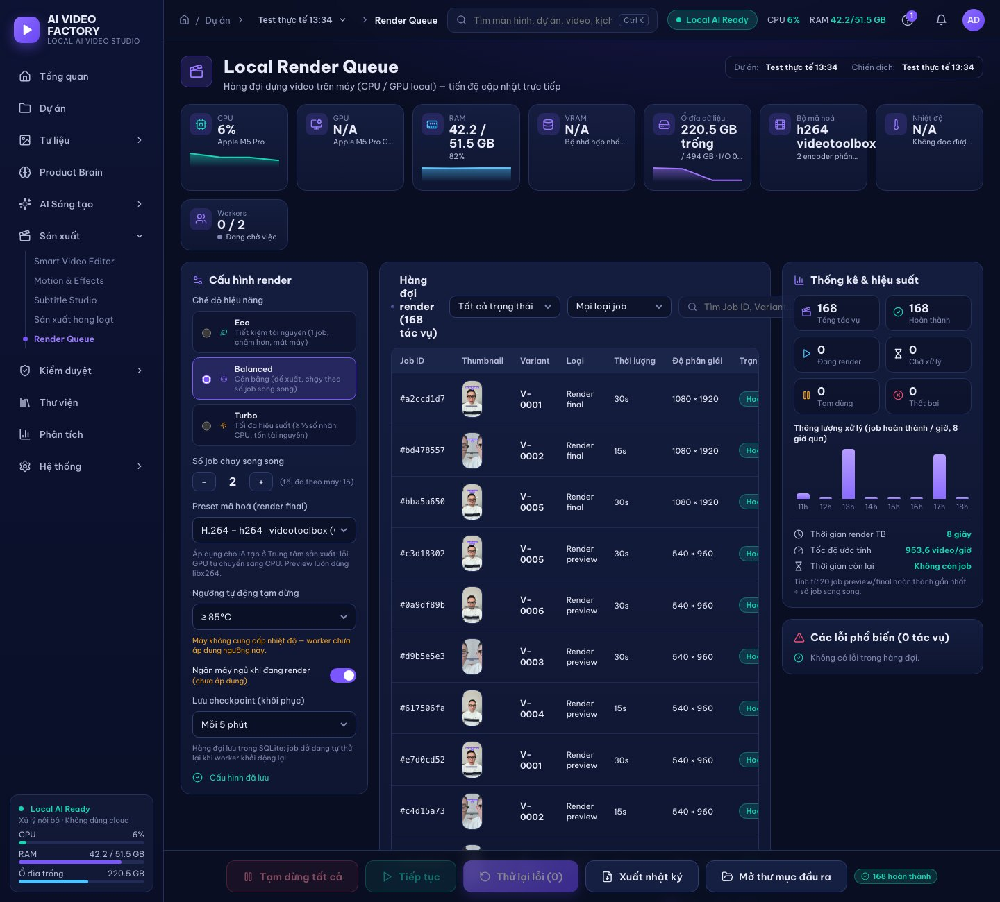
Kiểm định nội dung (QC)
Mỗi bản preview có báo cáo QC: claim, chính sách quảng cáo (theo ngành và nền tảng, có trích dẫn quy định), điểm nguyên bản (hình + tiếng + chữ so với bản gần nhất), trùng cảnh, quyền tư liệu, kỹ thuật (khung đen, đứng hình, clipping âm thanh), vùng an toàn TikTok, bản quyền nhạc. Quyết định: duyệt, yêu cầu sửa, từ chối, hoặc duyệt kèm lý do. Claim fail, chính sách fail và nguyên bản fail không thể duyệt kèm lý do.
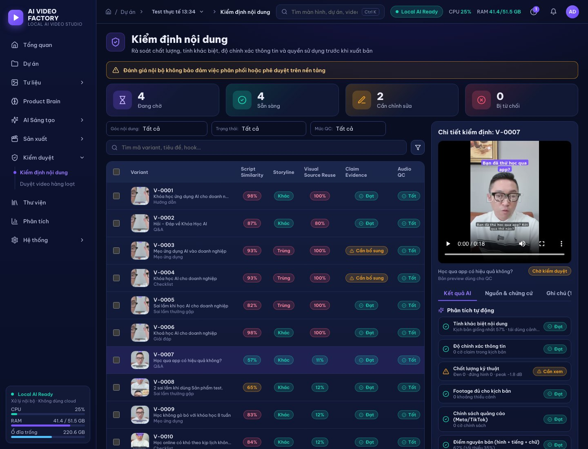
Thư viện và gói xuất cho Ads Manager
Mọi video final (MP4 + SRT + ảnh thumbnail + manifest JSON) nằm ở đây, lọc theo chiến dịch, góc, ngày. Chọn preset Meta Ads hoặc TikTok Ads rồi Xuất video: phần mềm đặt tên file theo quy ước chiendich_V-0001_goc_khachhang_30s_hook, kiểm tra spec (thời lượng, tỷ lệ, dung lượng, chữ chạm UI TikTok) và tạo ads_mapping.csv với tên quảng cáo, primary text, headline, CTA, landing URL kèm UTM theo mã biến thể. Bạn tải lên Ads Manager thủ công; đây là thiết kế có chủ đích.
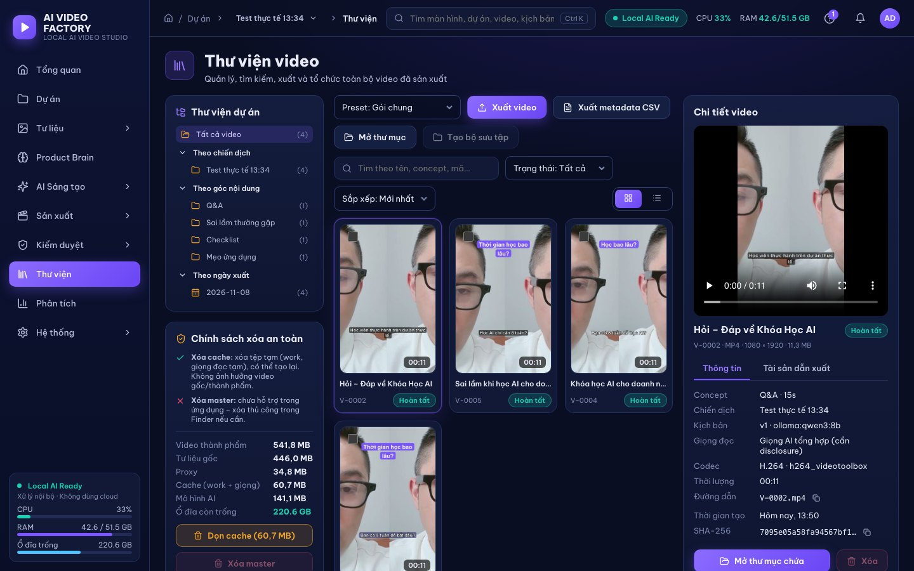
Phân tích hiệu suất và lô kế tiếp
Nhập CSV kết quả từ Ads Manager (cột code là mã biến thể, có file mẫu). Phần mềm không kết nối API nền tảng. Thẻ Yếu tố thắng → lô kế tiếp tính lift của từng hook, góc, khán giả, kết cấu, bố cục, thời lượng, tốc độ giọng, nhạc theo KPI bạn chọn (chỉ tính yếu tố có ít nhất 2 bản). Bấm Sinh lô kế tiếp: ma trận mới được đánh trọng số theo yếu tố thắng, hook thắng được ưu tiên, một tỷ lệ hook mới được sinh thêm để tiếp tục khám phá.
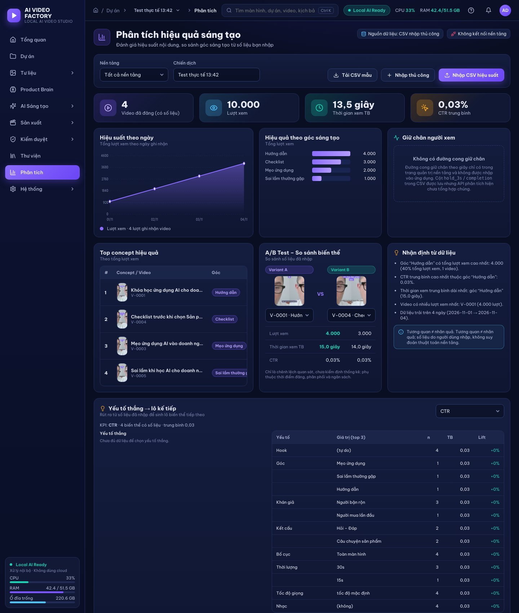
Hướng dẫn trong app
Lần đầu mở app, tour làm quen tự chạy qua toàn bộ quy trình (phím → ← Esc). Nút ? trên thanh trên cùng mở lại tour, hướng dẫn riêng của màn đang mở và checklist 11 bước tính từ dữ liệu thật của dự án.
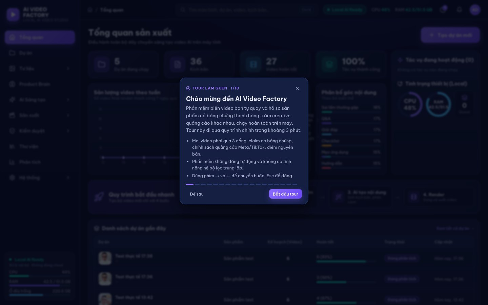
Brand Kit
Menu Hệ thống → Nhận diện thương hiệu. Màu chủ đạo, kiểu phụ đề và từ khoá nhấn được áp vào render. Tải logo (PNG/JPG) để chèn góc trên trái trong vùng an toàn; bật thẻ kết 1,8 giây với nền màu thương hiệu, logo và CTA. Watermark và lower third hiện chỉ xem trước, chưa render.
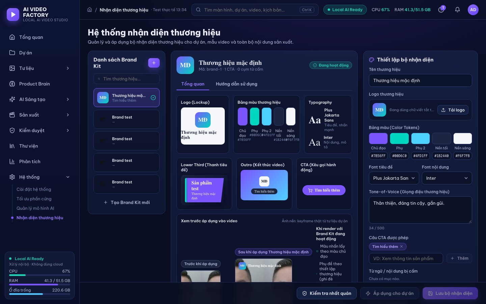
Quản lý mô hình AI
Menu Hệ thống → Quản lý mô hình AI. Xem engine nào đã sẵn sàng: LLM (Ollama), ASR (whisper.cpp, tải model ggml từ nguồn đã duyệt bằng một nút bấm), TTS, OCR, embedding, vision. Mọi thứ chạy offline sau khi tải model; phần mềm không gửi dữ liệu lên cloud.
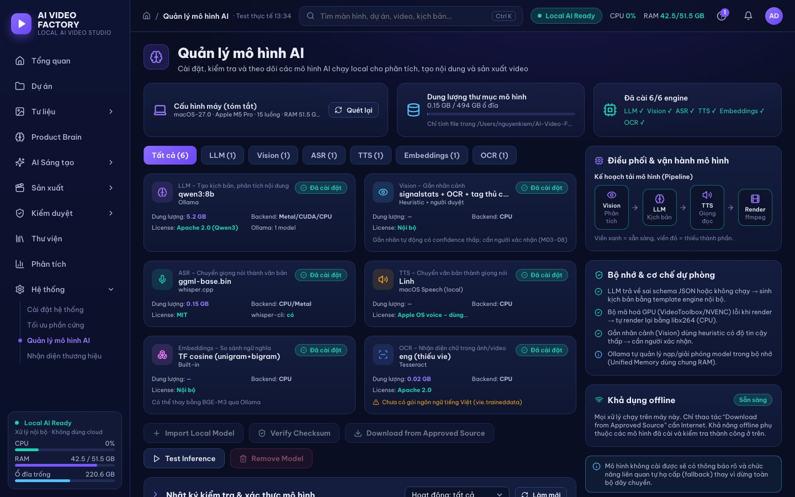
vie.traineddata để OCR tiếng Việt.Cài đặt
Menu Hệ thống → Cài đặt hệ thống. Đáng chú ý: số job song song, GPU, mức âm lượng mục tiêu, ngưỡng điểm nguyên bản tối thiểu (mặc định 0,35), các kiểm tra QC bật/tắt, sao lưu dữ liệu. Thẻ "Thành phần & phụ thuộc" là nơi kiểm tra môi trường khi cài máy mới.
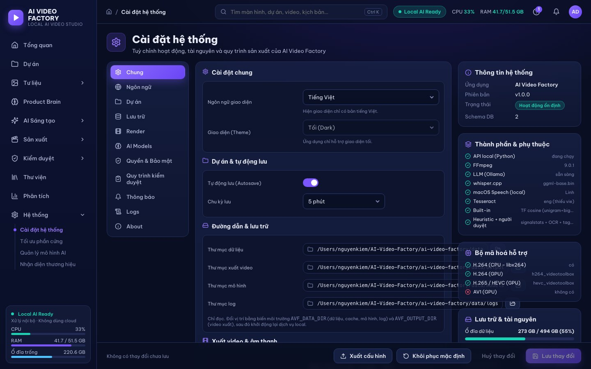
Các cổng an toàn
| Cổng | Chạy ở đâu | Khi fail | Cách sửa |
|---|---|---|---|
| Claim gate | Sinh kịch bản, duyệt kịch bản, QC | BLOCK-01 không duyệt được | Thêm bằng chứng cho claim hoặc sửa câu trong kịch bản |
| Cổng chính sách | Sinh kịch bản, sửa kịch bản, QC | BLOCK-05 không duyệt được | Bỏ câu trước/sau, cam kết kết quả, công dụng y khoa, giảm cân theo kg, nhận xét ngoại hình người xem… |
| Điểm nguyên bản | QC, tạo lô final, xuất gói | BLOCK-04 không duyệt, không render final, loại khỏi gói | Đổi hook, dựng lại storyboard (cảnh khác), đổi bố cục hoặc tốc độ giọng, chạy QC lại |
| Cổng nguồn | Sinh ma trận | NEED_MORE_SOURCE | Quay thêm clip khác góc máy/bối cảnh rồi nhập và duyệt cảnh |
| Quyền tư liệu | QC | BLOCK-02 | Xác nhận quyền sử dụng ở màn Nguồn video |
| Vùng an toàn TikTok | Render, QC | Cảnh báo | Phần mềm tự thu chữ; nếu vẫn chạm, rút ngắn câu phụ đề |
| Bản quyền nhạc | QC | Cảnh báo | Đặt LICENSE.txt trong thư mục data/music |
| Nhãn AI | QC, manifest, gói xuất | Luôn nhắc | Bật nhãn "nội dung có AI" khi đăng; manifest ghi ai_disclosure: yes |
Bố cục render
Bốn bố cục được gán xoay vòng theo biến thể. Cảnh phụ trong "chia đôi" và "hình-trong-hình" luôn là một cảnh khác, không phải bản lặp hay lật của cảnh chính.
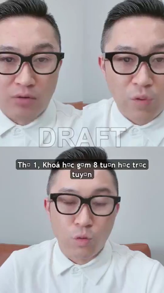
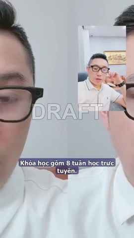
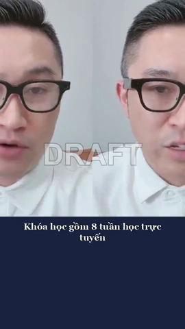
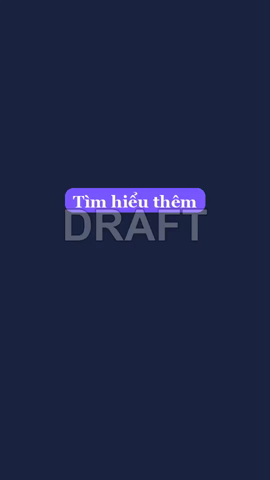
Ảnh là khung hình từ bản preview (có watermark DRAFT). Bản final không có watermark và ở độ phân giải đầy đủ 1080×1920.
Kết quả kiểm thử
Lỗi đã phát hiện và sửa trong đợt test này
- Font Trebuchet và Impact thiếu dấu tiếng Việt, hiện ô vuông trên phụ đề. Giờ chỉ dùng font có đủ glyph tiếng Việt (kiểm tra tự động).
- Bộ mã hoá AAC làm đỉnh âm thanh vượt limiter khoảng 1,3 dB nên QC báo clipping. Trần limiter hạ xuống −2,5 dB.
- Mọi biến thể chọn cùng một bộ cảnh. Giờ ưu tiên cảnh chưa dùng ở bản khác, có nhiễu theo seed.
- Phụ đề chạm vùng icon bên phải của TikTok. Giờ vùng chữ chừa 15% bên phải và tự thu kích thước.
- Không dựng lại được storyboard sau khi QC. Đã cho phép.
- Job mồ côi khi worker bị tắt ngay trước khi khởi động lại không được thu hồi. Worker giờ quét lại mỗi 30 giây.
- Tên thư mục xuất chứa dấu hai chấm (giờ phút) không hợp lệ trên Windows. Đã làm sạch tên.
Giới hạn cần biết
- Bộ quy tắc chính sách là regex theo tài liệu công bố đến 2025. Nó chặn sớm các câu chắc chắn bị từ chối, nhưng không thay kiểm duyệt của Meta/TikTok và không bảo đảm quảng cáo được duyệt.
- Điểm nguyên bản so sánh cảnh, bố cục, font, giọng, nhạc và chữ; chưa dùng perceptual hash khung hình hay embedding ngữ nghĩa.
- Máy thử nghiệm chỉ có một giọng tiếng Việt (Linh) nên biến số giọng mới dừng ở tốc độ. Cài thêm giọng là phần mềm tự xoay vòng.
- Thư mục nhạc
data/musicđang trống trên máy thử nghiệm; tính năng nhạc nền đã có test tự động nhưng chưa thử với file nhạc thật. - Windows: đã rà soát và sửa mã, có script PowerShell, chưa chạy thử trên máy Windows thật. Đóng gói desktop cho Windows cần chạy
npx tauri build --bundles nsistrên Windows. - Video ngang đưa về khung dọc bị cắt lấy phần giữa; chưa có bám theo khuôn mặt.
- Không có và sẽ không có: tự đăng, đa tài khoản, đổi proxy, né bộ lọc trùng lặp.
Câu hỏi thường gặp
Tại sao sinh ma trận báo "cần thêm nguồn"?
Vì số bản mục tiêu lớn hơn 20 mà dự án có dưới 3 video nguồn hoặc dưới 12 cảnh đã duyệt. Ít nguồn thì các bản sẽ trùng hình và nền tảng coi là nội dung lặp. Quay thêm clip khác góc, nhập và duyệt cảnh. Nếu buộc phải bỏ qua, bật "Cho phép ít nguồn" ở Chiến lược; phần mềm sẽ ghi cảnh báo vào kế hoạch.
QC báo BLOCK-04 dù kịch bản khác nhau?
Điểm nguyên bản tính cả hình và tiếng. Hai bản có kịch bản khác nhưng cùng cảnh, cùng bố cục, cùng tốc độ giọng vẫn giống nhau về mặt video. Dựng lại storyboard (cảnh khác sẽ được ưu tiên), đổi bố cục hoặc tốc độ giọng rồi QC lại.
Bao nhiêu bản là hợp lý cho một đợt?
Phụ thuộc vào nguồn: thẻ Kế hoạch & ước tính cho con số tổ hợp khả thi và số hook cần có. Với 5 video nguồn, 25 cảnh, 5 claim và 20 hook, 60–100 bản là mức các bản vẫn khác nhau rõ. Trên 300 bản cần 8 video và 40 cảnh trở lên.
Có thể đăng tự động không?
Không. Gói xuất được thiết kế để tải lên Ads Manager thủ công. Nếu cần đăng tự động hợp lệ, hướng duy nhất là TikTok Content Posting API và Meta Graph API với tài khoản bạn sở hữu và app developer được duyệt; phần mềm chưa tích hợp.